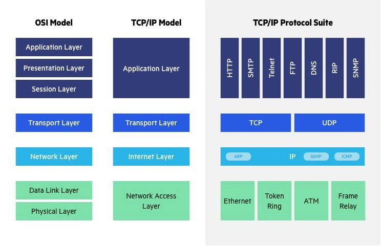
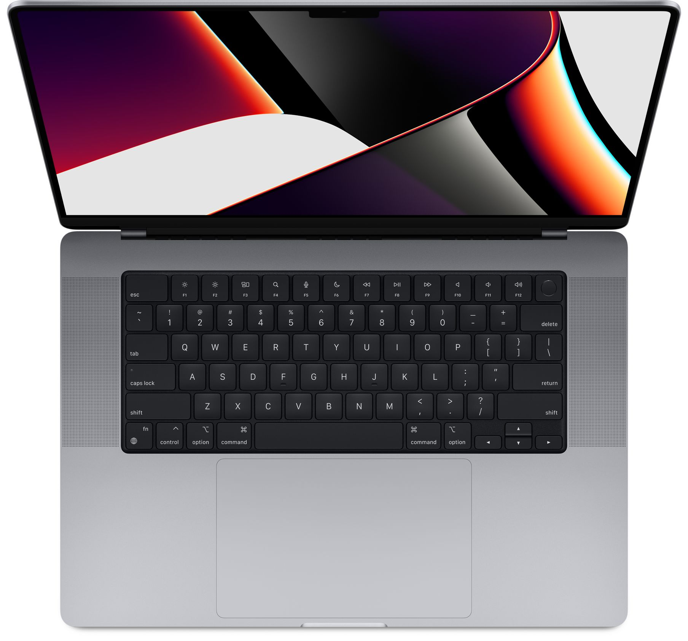

Computer Information
Systems Blog
By: Shelby Gleason
Computer Network Fundamentals
The Open Systems Interconnection (OSI) 7-Layer Model
| Layers | Function | |
|---|---|---|
| 7 | Application Layer | Human computer interaction layer, where applications can access network services. |
| 6 | Presentation Layer | Ensures that data is in usable format and is where data encryption occurs. |
| 5 | Session Layer | Maintains connections and is responsible for controlling ports and sessions. |
| 4 | Transport Layer | Transmits data using transmission protocols including TCP and UDP. |
| 3 | Network Layer | Decides which physcial path the data will take. |
| 2 | Data Link Layer | Defines the format of data on the network. |
| 1 | Physical Layer | Transmits raw bit stream over the physical medium. |
OSI vs TCP/IP Model
Computer Hardware
Basic specs to look for when buying a computer for video editing:
Memory/RAM: 8-32 GB RAM or as much as you can afford (ideally at least
16GB)
Processor: Multi-core Intel i5/i7/i9 models (i9 is best). Preferably 4
or
more processor
cores.
Storage: At least 256 GB hard drive, 7200 RPM, preferably SSD
(fastest),
HDD also good, you can always add external hard drives. Avoid SATA drive if
possible.
Graphics card: Depends on video editing software. For example, Premiere
Pro
and Davinci
Resolve do well with both AMD and NVIDIA. (Minimum 2GB memory)
Operating System: Windows 7 (64 bit edition), Mac OS X, Linux (Your OS
will
likely determine
the editing software you go with)
Screen Size:19-21 inch minimum
Firewire or Thunderbolt Port built in or as an external dock
Macbook Pro 16  VS Dell XPS 17 9700
MacBook Pro 16
- Apple M1 Pro with 10-core CPU, 16-core GPU, 16-core Neural Engine
- 16GB unified memory
- 512GB SSD storage
- 16-inch Liquid Retina XDR display
- Three Thunderbolt 4 ports, HDMI port, SDXC card slot, MagSafe 3 port
- 140W USB-C Power Adapter
- Backlit Magic Keyboard with Touch ID - US English
Dell XPS 17 9700
- Processor: 10th Generation Intel® Core™ i7-10875H (16MB Cache, up to 5.1 GHz, 8 cores)
- Operating System: Windows 10 Home English
- Graphics Card: NVIDIA® GeForce RTX™ 2060 6GB GDDR6 with Max-Q
- Display: 17.0" FHD+ (1920 x 1200) InfinityEdge Non-Touch Anti-Glare 500-Nit Display
- Memory: 16GB DDR4-2933MHz, 2x8G
- Hard Drive: 512GB M.2 PCIe NVMe Solid State Drive
Verdict:
If you are looking to buy a computer for video editing, either of these laptops would do. Both are pretty comparable and have most, if not all, the recommended specs needed for video editing. Overall though, I think users would be happier with the MacBook Pros performace.How the Internet Works:
Addionial Info:

Computer System Components
5 Basic Components of a Computer:
- A motherboard: The glue that holds everything else together.
- A Central Processing Unit (CPU): The "brain" of a computer. Has direct plug connection to the motherboard, and communication with all of the computers other components.
- A Graphics Processing Unit (GPU), also known as a video card: Makes it possible for computers to generate high-end visuals like those found in the many different types of video games.
- Random Access Memory (RAM), also known as volatile memory: Stores data regarding frequently accessed programs and processes, gets erased every time the computer restarts.
- Storage: Solid State Drive (SSD) or Hard Disk Drive (HDD): Stores data long term.